Astre
A point tracking & trajectory detection algorithm
Presentation
Our work started with this simple observation: the human visual system is able to perceive motion hidden in high amounts of noise. How far could a computer go?
In the ASTRE framework, we derive from the a-contrario methodology a probability-based ``perceptual metric'' on the trajectories (combining their length, acceleration, number of holes, etc.). We also propose an efficient algorithm to extract the trajectories having the best appearance.
The principle of a-contrario algorithms is to control the number of false detections in the noise, and our method is thus resilient to high amounts of noise. The perceptual metric can also be used to filter the result of any other tracking algorithm, hence reducing the number of false detections.
Paper
M. Primet, L. Moisan, ``Point tracking: an a-contrario approach'', preprint MAP5, 2012.
Download 
BibTeX Citation
@unpublished{ASTRE2012,
author = {M. Primet and L. Moisan},
title={Point tracking: an a-contrario approach},
note={Preprint MAP5},
year={2012}
}
Snow sequence
We filmed a sequence of falling snow flakes in front of a tainted background, and extracted the motion of the snow flakes and of the background to obtain an interesting point sequence to compare point tracking algorithms.
Go to the snow data sequence page for a complete description and the sequence data files.
Examples
-
Detections in high levels of noise
Our algorithm is able to cope with a high density of noise points. This example shows five trajectories hidden in 60 random noise points, that our algorithm is able to detect and extract.
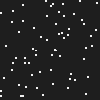 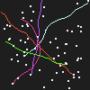We generated 5 trajectories and added 60 noise points. We show the original sequence (left), our detections (center) and the ground truth (right). We see that the trajectories have been correctly detected, and no false detection has been made.Our algorithm makes very few false detections.
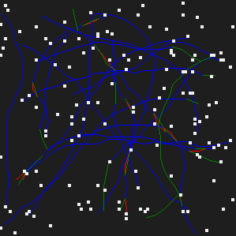A sequence containing 20 trajectories and 120 noise points, we show in blue the correctly detected trajectory links, in red the wrongly detected links, and in green the existing links that were not detected. -
Robustness to model variations
Our algorithm is able to detect trajectories with high accelerations, and does not require a global parameter for all trajectories, but is able to adapt its detection thresholds to each trajectory in the data.
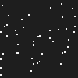 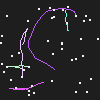We generated a sequence containing 5 trajectories and 40 noise points (left). We show the detections made by our algorithm (center) and the ground truth (right). -
Robustness to parameter tuning
Only one parameter, easy to set (all detections shown on this page are obtained with the canonical maximal log(NFA) = 0 parameter). Changing the parameter has the effect of adding or removing trajectories, rather than changing completely their appearances.
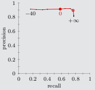Recall and precision of ASTRE on the snow sequence, we see that the most interesting detections happen for a maximal log10(NFA) parameter between 0 (red disc) and 5 (red circle)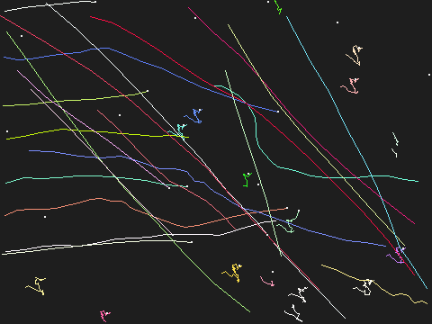 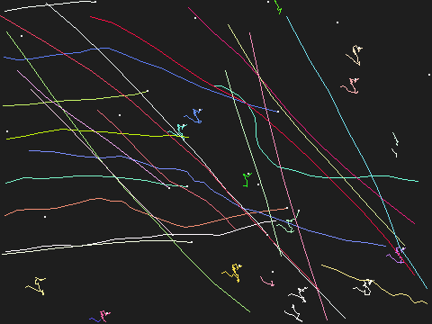 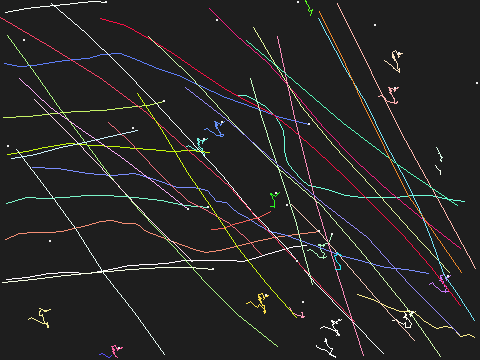 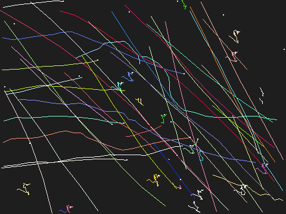 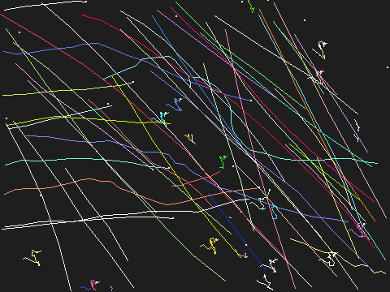 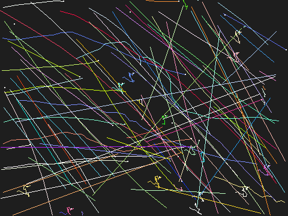Detections on the snow sequence when the maximal log10(NFA) parameter takes the values 0, 1, 2, 3, 4, 5